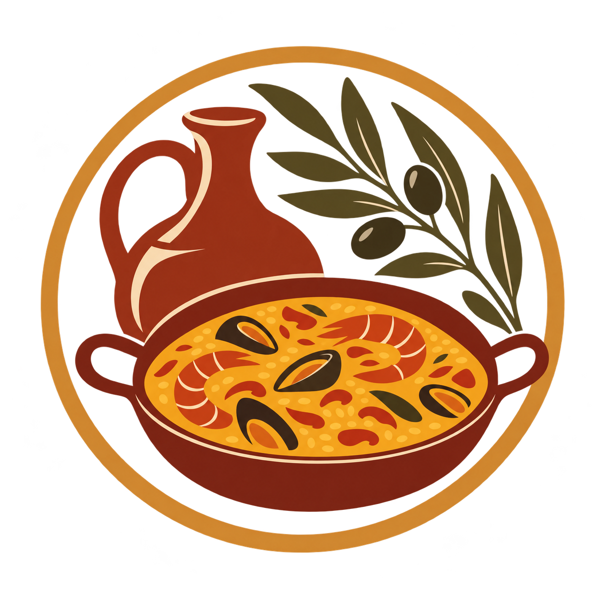
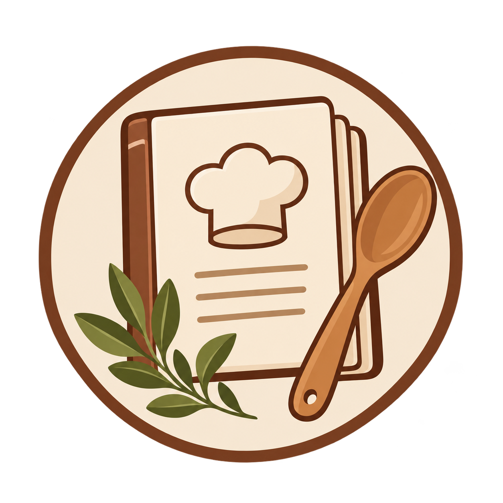
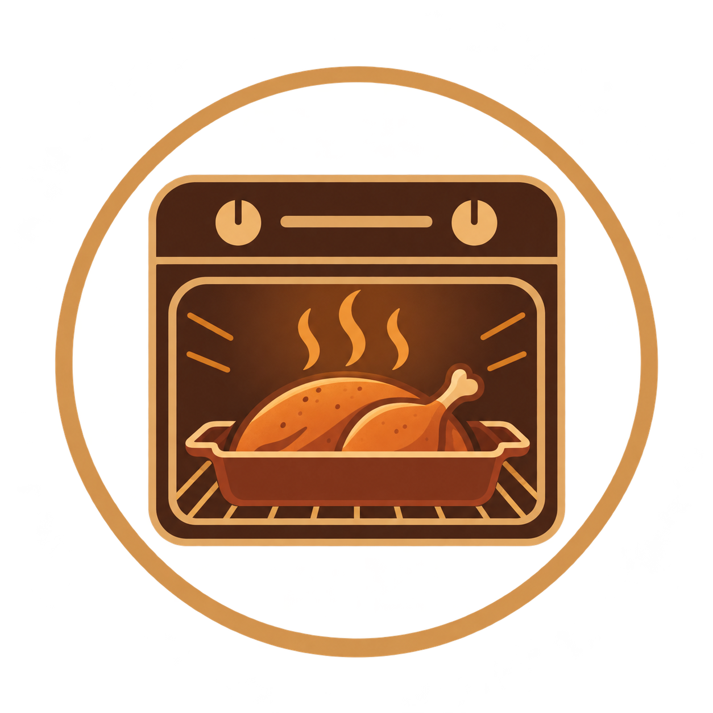

Tradición
Descubre la historia de uno de los platos más representativos de la gastronomía castellana.
Imagen generada mediante inteligencia artificial

Descubre la historia de uno de los platos más representativos de la gastronomía castellana.

Conoce diferentes maneras de preparar el cochinillo respetando el producto y su sabor.

Aprende algunos de los secretos para conseguir una carne tierna y una piel dorada y crujiente.

Una receta pensada para conseguir una carne jugosa y una piel dorada y crujiente.
Ver receta
Una propuesta más completa, acompañada de patatas y una guarnición sencilla.
Ver recetaVídeo sobre la preparación tradicional del cochinillo al horno.
El cochinillo asado es una elaboración en la que cada detalle importa. La elección de la pieza, la temperatura del horno y el tiempo de cocción contribuyen a conseguir una carne jugosa y una piel crujiente.
En nuestras recetas encontrarás distintas propuestas para conocer y disfrutar uno de los platos más reconocibles de la cocina segoviana.
Explora las recetasDescubre nuestras recetas y conoce mejor la tradición gastronómica que rodea al cochinillo segoviano.